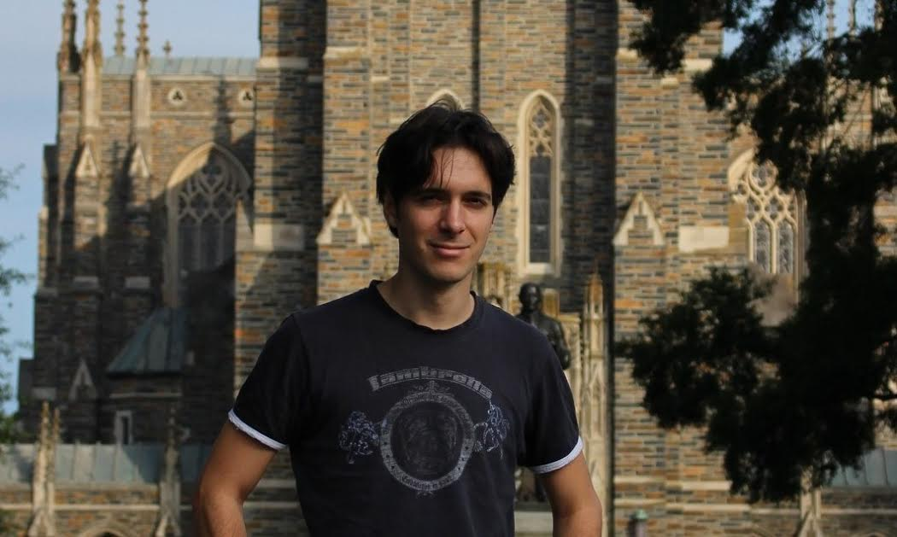

ChienKuang and ShihHan
Invite You to Celebrate At their Wedding

Our Story

Chien-Kuang (Cornelia) is from Taipei, Taiwan. With her passion in medical research, she graduated from medical school in Taiwan and came to Durham, North Carolina in 2012 as a graduate student to study cancer biology at Duke, where she met Sean almost immediately after her arrival. Outside of lab, Chien-Kuang sings in Duke Chapel Choir, and loves to walk and run. Her favorite composer is Bach and her favorite instrument is piano.
- Chien-Kuang's Story

Shih-Han (Sean) is also from Taipei, Taiwan. He came to Duke at 2011 to study statistics. He met Chien-Kuang in 2012 through their common frieds Meredith and Chih-An. Sean enjoy doing research in data science and plays table tennis in the Duke varsity team. He loves Baroque and Romantic music; Evgeny Kissin is his favorite pianist. Sean joined Duke Chapel Congregation in 2014.
- Sean's Story
Bridesmaids
Groomsmen
-
Henri Roesch - Henri is a fourth year PhD student studying differential geometry at Duke. He has known Shih-Han since they both began their programs in 2011 and he couldn't be more excited to see him marry such a wonderful woman! A native of South Africa, Henri lived in the UK for 13 years prior to coming to the US. He loves video games, biltong (the equivalent of South African beef jerky), good movies, and southern biscuits (Bojangles anyone?)
-
Nick Davis - Nick is a 3rd year graduate student in the UPGG program at Duke with Chien-Kuang. There he studies single-cells and how they lead to Hodgkin's Lymphoma. He's an avid gamer and kickball player.
-
Kaoru Irie - Kaoru is a third year PhD student in statistics at Duke university. He and Shih-Han pursue the common academic interests of statistics and, in their first year, helped each other to survive the coursework together. His hobby includes reading books and watching movies. I'm very happy to be present in his wedding as his groomsman. Congratulations, Shih-Han and Chien-Kuang!
-

Sean Keenan - Sean came to North Carolina through his wife, Melissa's involvement with Duke. Mel and Sean enjoy their lives here with their lovely dog Liam; they often go hiking and watch Duke basketball games together. Sean teaches math and coach basketball at a local high school. When Mel is busy working hard in the lab, he loves to play golf. We are very honored to have Sean in the special day!
-

Michael Lindon - Michael is a third year PhD student in Statistics along with Shih-Han, meaning they have endured many a class together! He enjoys shopping and drinking coffee in open public places. Looking forward to seeing Shih-Han and Chien-Kuang tie the knot!
-
Richard Opoku-Nsiah - Richard and Sean have known each other since their internship in 2014. Richard is currently a statistics PhD student at Kansas State University. He is not only a professional actuary but also good at soccer and dancing! We are excited to meet this fabulous Ghanaian man soon!
Information
Wedding Ceremony
Duke Chapel
401 Chapel Dr, Durham, NC 27708
Live Streaming
Youtube live stream link will be shared soon!
Attire
Our wedding theme is the rainbow. The six-colored rainbow theme is to honor our loving families, friends, and the community, who love and support us as well as all the diversified people in our lives with different backgrounds. The rainbow is also a symbol of God's unconditional love and forgiveness that nurtures us and makes us strong. Thus, we expect our wedding to be colorful, cozy and genuine. Feel free to wear your comfortable and colorful suit or dress.
Parking
Accessible parking is available in the Bryan Center Parking Deck (Parking Garage IV), located at 125 Science Drive, which is very close to the Duke Chapel. The fee for guest parking is $2 per hour or $12 per day. The direction toward the chapel is indicated as the figure. For updated parking information please visit http://parking.duke.edu/parking/visitor_parking/ A wheelchair-accessible entrance is available at the rear of the Duke Chapel on the north side of the building.
Reception Dinner
Whitford Hall, Duke Memorial United Methodist Church 504 West Chapel Hill StreetThe dinner will be a casual and joyful potluck with music we love and
some authentic local music!
Children are welcome.
Food
We really appreciate and expect nothing more than your presence and good wishes for our marriage. However, if you would like, instead of a gift, please bring a dish to share with people. We will really appreciate it if you tell us what food you plan to bring when you RSVP. Right before the dinner, our friends will help you to the food table to label your food with the ingredients and your name. We thankfully decline any alcohol beverages due to the restriction of the reception facility.
Parking for the reception dinner
Our guests are welcomed to park behind the Duke Memorial UMC on Memorial St. A limited number of spaces reserved for handicap parking are in the Gregson Street parking lot.
Hotel accommodations
Brookwood Inn
About 15 minutes walk from Duke Chapel and accross from Duke Hospital.
Millennium Hotel
About 30 mins away from Duke Chapel
About 15 minutes walk from Duke Chapel
Things to do in the area
You will pleased to know that there is PLENTY to do in Durham! In terms of restaurants, our fine city was voted the "South's Tastiest Town" by Southern Living Magazine and the New York Times has featured it as a top dining destination. Below are a few of our most frequented restaurants.
The Durham Farmer's Market:
Open every Saturday during the summer form 8 AM to 12 PM, the Durham Farmer's Market has literally everything you can imagine: local honey, homemade muscadine wine (a NC specialty), fresh flowers, handmade jewelry, quilts and carved furniture. The Market would be a great place to grab breakfast the morning of Aug. 3!
Eno River:
Eno River State Park, which is only a 15 minute drive from campus. So far, we've hiked Cox Mountain trail, which winds around the banks of the river and crosses over a swinging bridge. The trail's a great way to see North Carolina's scenery and wildlife.
Sarah P. Duke Gardens:
Located on Duke's West Campus, this garden is kept year-round and is a must-see for anyone who loves flowers or simply a beatiful stroll outdoors. The grounds are divided into various themed gardens.
Contact us
For any questions, please email:
shchang831 at gmail dot com
Rsvp
Gallery


{kind=link}
{kind=link}
{kind=link}
{kind=link}
{kind=link}
{kind=link}
{kind=link}
{kind=link}
Registry
-
We really appreciate and expect nothing more than your presence and good wishes for our marriage. We also find ourselves in a unique situation, in which we are both still students and will spend at least a couple of years of our married life in a small room of an apartment complex. Thus, although we appreciate people expressing their love with gifts to us, it would actually be quite challenging for us since we are not capable of storing gifts.
-
 Society for the Prevention of Cruelty to Animals (SPCA) dedicates to creating a more humane community where every adoptable animal has a home.
Society for the Prevention of Cruelty to Animals (SPCA) dedicates to creating a more humane community where every adoptable animal has a home.
- StepUp Ministry is a community of diverse faiths that partners with adults and children in the shared goal of stable lives through jobs and life skills training.
- Durham Interfaith Hospitality Network addresses the immediate and ongoing needs of homeless families by helping families move toward residential stability and self-sufficiency.
- Durham Nativity School provides a tuition-free, enriched learning environment for middle school boys who have the ability and commitment to achieve, but not the resources for a quality, independent school education.
Instead of a gift, as an alternative we encourage you to bring a dish to share at our reception dinner. It will be wonderful if you could specify what dish you will bring when you RSVP. In the meanwhile, we feel very blessed to have many friends here in the Research Triangle area who strive to make people's lives better. So we have an idea of a non-traditional wedding registry -- if you wish, please consider making a gift to a group or organization that makes our community better. Following are a few examples of organizations that we really admire and to whom we feel thankful.